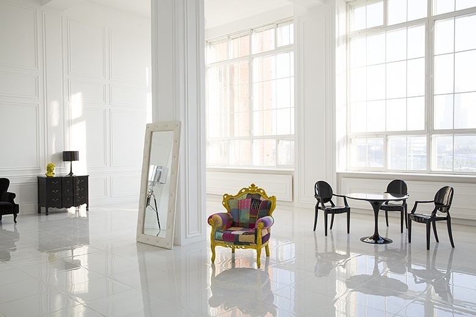
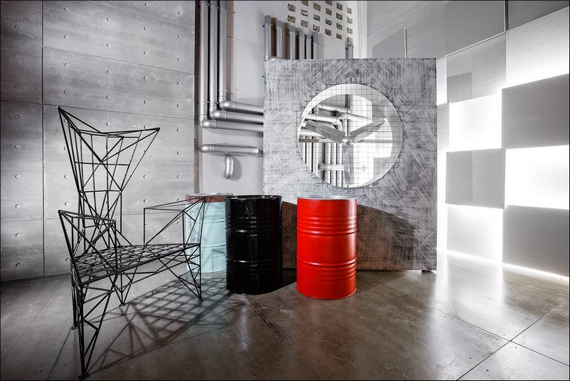

Интерьерные студии
Зал Home

Зал площадью 50 кв.м с большим панорамным окном. Интерьер представляет собой апартаменты в современном европейском стиле. Зал насыщен множеством декора, деталей и локаций для съемки. Это роскошная кровать с золотистым геометрическим панно у изголовья, дизайнерскими тумбами по бокам и изящными светильниками. Возле окна на подиуме дополняет этот антураж дизайнерский туалетный столик с бархатным креслом. На противоположной стороне от окна расположена угловая уютная каминная зона в спокойных оттенках с удобным кожаным креслом, стел лажом и множеством декора на полках. Особенностью зала является настоящая шикарная ванна, дополненная свисающим светильником необыкновенной красоты, привезенной специально из Турции.
Зал Memphis

Каждый из наших съемочных залов индивидуален и новый не станет исключением. В этот раз мы взглянули на создание зала как на смелый эксперимент и сделали его максимально цикличным, где все зоны связаны между собой. Источником вдохновения послужил одноименный стиль «Memphis», с его необычностью, яркостью, смелостью и неожиданностью решений. В удивительном интерьере зала есть много интересных фотозон, которые помогут свободе самовыражения: геометрические формы и яркие цвета, библиотека, подиум, лестница и второй этаж.
Зал Black
Просторный зал общей площадью 95 кв.м. имеет 2 больших панорамных окна. Зал стилизован под современную английскую гостиную в строгом стиле и дополнен дизайнерской мебелью (2 мягких дивана, кресло и белый ковер из натуральной овечьей шкуры). Благодаря благородной темной насыщенной гамме цветов в оформлении зала и панорамным окнам, площадка является идеальным местом не только для проведения мероприятия в дневное время, но и в вечернее.
Зал SPACE
Самый крупный зал пространства Focus– целых 100 квадратных метров, он идеально подходит для мастер-классов, открытых лекций и мероприятий для большой компании. Зал условно поделен на 2 зоны, которые, являясь антагонистичными, создают общую картину цельного креативного пространства. Первая условная зона имеет гигантскую стену полностью покрытую фактурной штукатуркой с тончайшими прожилками серебряной блестящей текстуры, также имеется стена с граффити приглушенных цветов и дополнительными источниками света на ней. Вторая условная часть зала выполнена в шикарном стиле «благородный китч» Так же в зале находится удобное кожаное кресло и большой диван коричневого цвета, обитый натуральной кожей. Отдельно стоит упомянуть, что в зале очень много естественного света за счет панорамных окон, полностью занимающих половину периметра зала (3 окна 3м. х 5м. каждое) В зале имеется стильный деревянный подиум темно-болотного цвета, который можно использовать для групповых снимков.